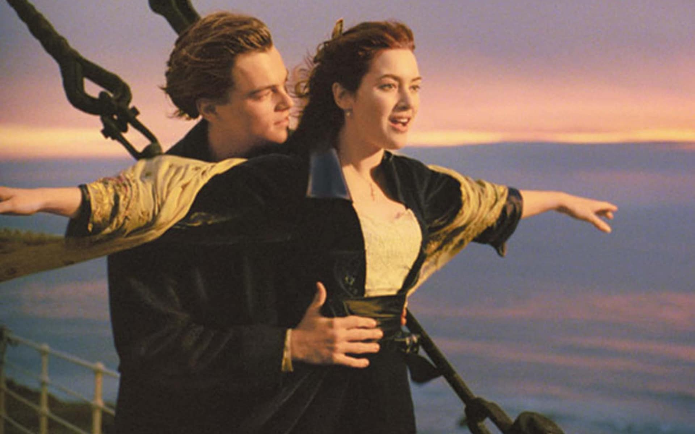

TITANIC
| ROLE | DETAILS |
|---|---|
| Main Actors | Kate Winslet, Leonardo DiCaprio, Billy Zane |
| Director | James Cameron |
| Age Restriction | +12 years |
| Showing Time | 20h:00 |
BRIEF SYNOPSIS
James Cameron's "Titanic" is an epic, action-packed romance set against the ill-fated maiden voyage of the R.M.S. Titanic; the pride and joy of the White Star Line and, at the time, the largest moving object ever built. She was the most luxurious liner of her era -- the "ship of dreams" -- which ultimately carried over 1,500 people to their death in the ice cold waters of the North Atlantic in the early hours of April 15, 1912.